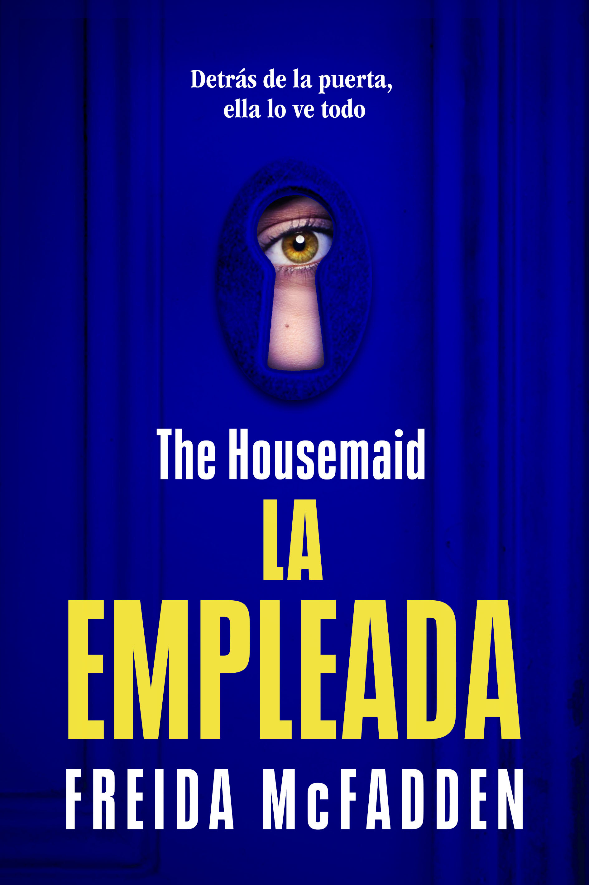
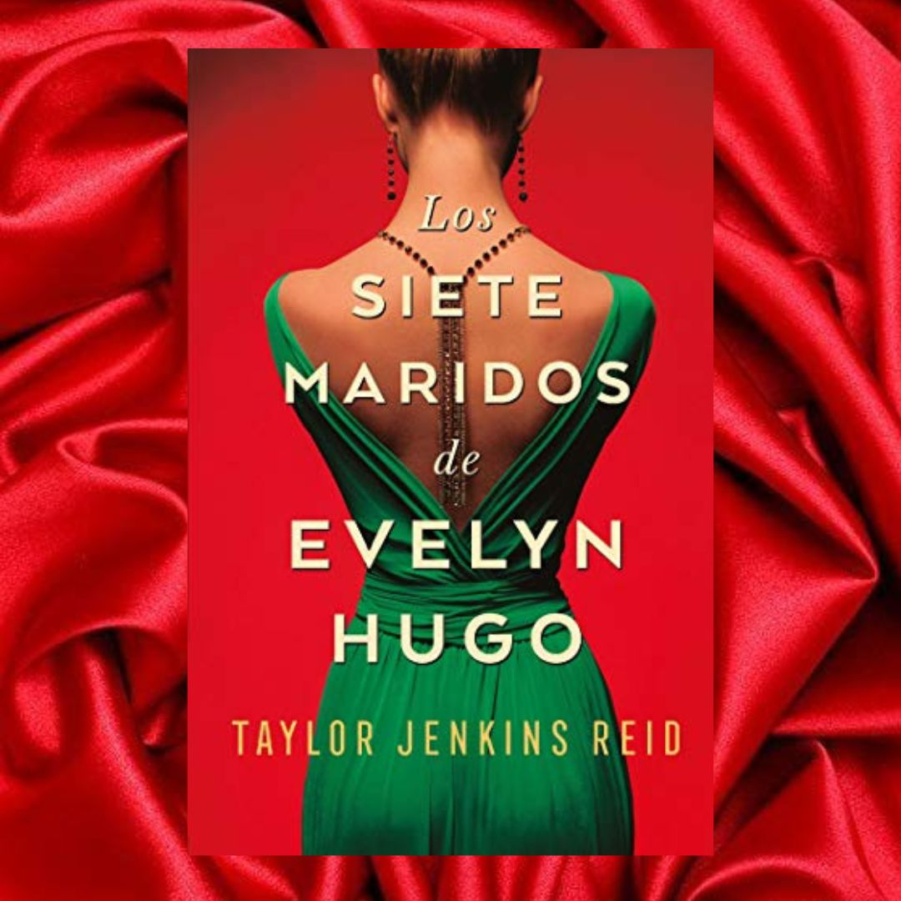

Todos los días friego la preciosa casa de los Winchester de arriba abajo. Recojo a su hija del colegio y preparo deliciosas comidas para toda la familia antes de subir a cenar sola en mi minúscula habitación del piso superior. Intento no prestar atención a Nina cuando lo ensucia todo simplemente para ver cómo lo limpio. A las extrañas mentiras que cuenta sobre su propia hija. A su marido, que cada día parece más abatido. Pero cuando miro a Andrew a los ojos, castaños, encantadores y llenos de dolor, no me resulta difícil imaginar cómo sería vivir en la piel de Nina. El gran vestidor, el coche de lujo, el esposo perfecto. Hasta que un día no me resisto a probarme uno de sus maravillosos vestidos blancos. Solo quiero saber qué se siente. Pero ella pronto lo descubre, y cuando me doy cuenta de que la puerta de mi habitación solo se cierra por fuera ya es demasiado tarde. Algo me reconforta: los Winchester no saben quién soy en realidad. No saben de lo que soy capaz...
Evelyn Hugo, el icono de Hollywood que se ha recluido a su edad madura, por fin decide contar la verdad sobre su vida llena de glamour y de escándalos. Pero cuando para ello elige a Monique Grant, una periodista desconocida, nadie se sorprende más que la propia Monique. ¿Por qué ella? ¿Por qué ahora? Monique no está precisamente en su mejor momento. Su marido la abandonó y su vida profesional no avanza. Aun ignorando por qué Evelyn la ha elegido para escribir su biografía, Monique está decidida a aprovechar esa oportunidad para dar impulso a su carrera. Convocada en el lujoso apartamento de Evelyn, Monique escucha fascinada mientras la actriz le cuenta su historia. Desde su llegada a Los Ángeles en los años 50 hasta su decisión de abandonar su carrera en el mundo del espectáculo en los 80 -y, desde luego, los siete maridos que tuvo en ese tiempo-, Evelyn narra una historia de ambición implacable, amistad inesperada y un gran amor prohibido. Monique empieza a sentir una conexión muy real con la legendaria actriz, pero cuando el relato de Evelyn se acerca a su fin, resulta evidente que su vida se cruza con la de Monique de un modo trágico e irreversible.
